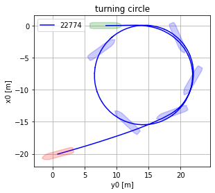
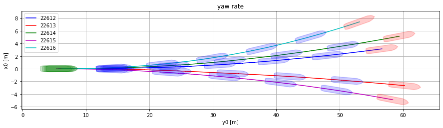
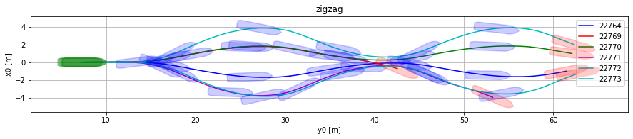
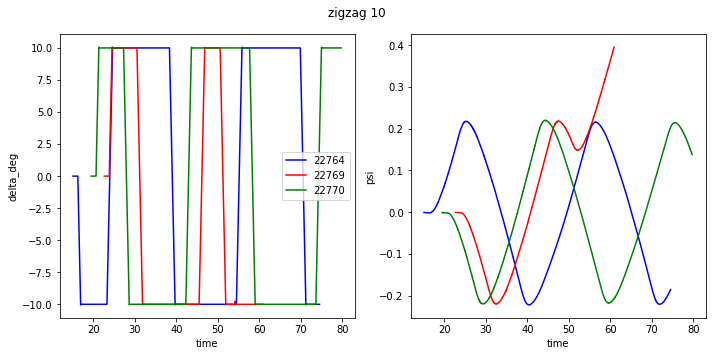
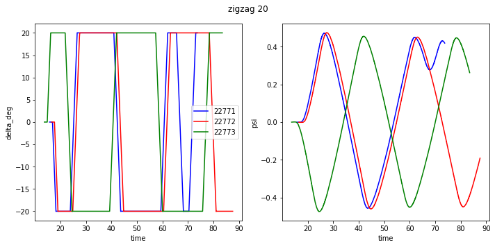

Model tests
2. Model tests¶
VMM:s will be developed for the reference ship using motion regression based on a series of model tests with a model that is free in six degrees of freedome. A summary of the available model tests is shown in Model tests.
| Initial speed [m/s] | type | angle | direction | |
|---|---|---|---|---|
| id | ||||
| 22639 | 0.64 | reference speed | ||
| 22635 | 0.80 | reference speed | ||
| 22611 | 0.96 | reference speed | ||
| 22774 | 0.96 | turning circle | ||
| 22612 | 0.96 | yaw rate | ||
| 22613 | 0.96 | yaw rate | ||
| 22614 | 0.96 | yaw rate | ||
| 22615 | 0.96 | yaw rate | ||
| 22616 | 0.96 | yaw rate | ||
| 22764 | 0.96 | zigzag | 10 | SB |
| 22769 | 0.96 | zigzag | 10 | PS |
| 22770 | 0.96 | zigzag | 10 | PS |
| 22771 | 0.96 | zigzag | 20 | SB |
| 22772 | 0.96 | zigzag | 20 | SB |
| 22773 | 0.96 | zigzag | 20 | PS |
Fig. 2.1 Model tests¶




